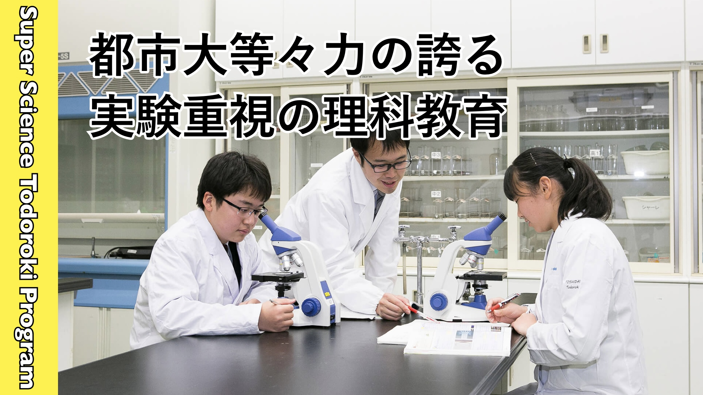

都市大等々力理科部とは
東京都市大学等々力中学校高等学校 理科部は2008年に創設されて以来、自然を愛する心と未知なるものへの探求心の２つの心を育てるべく、日々活動を行ってきました。
日々の活動は、各部員の興味のある分野ごとに分かれて専門的な調査・研究活動を行っています。この他にも、学校行事でのサポーターとして様々な活動の支援も行っています。
各班ごとの活動
more →
部全体での活動
more →
部活動紹介ビデオ
more →
部活動見学
新型コロナウイルスの感染拡大に伴う活動規制により、学校説明会開催時に活動を行っていない可能性があります。
本校が開催している学校説明会もしくはオープンスクールに参加していただくと部活動見学をする時間がございます。部活動見学を希望される方はこちらに参加していただきますようお願いします。
注）
部活動見学
と書かれているイベントにご参加ください。
都市大等々力 学校説明会
藍桐祭
理科部では、誰でも、どこからでも理科部の展示をご覧いただけるよう、藍桐祭特設ページを開設しています。自然科学や科学技術への興味を深めてもらえるような企画を多数用意しています。どうぞ、ごゆっくりお楽しみください。
理科部 藍桐祭特設ページ
こちらも併せてご覧ください

外部リンク
アクセス
【電車】
等々力駅 下車 徒歩10分
【バス】
都市大等々力キャンパス前 下車 徒歩１分
都市大等々力キャンパス東 下車 徒歩５分
玉川警察署 下車 徒歩５分
東京都市大学等々力中学校高等学校 理科部 Twitter
東京都市大学等々力中学校高等学校 HP
Copyright©TCU Todoroki Science Research Club , All Rights Reserved.